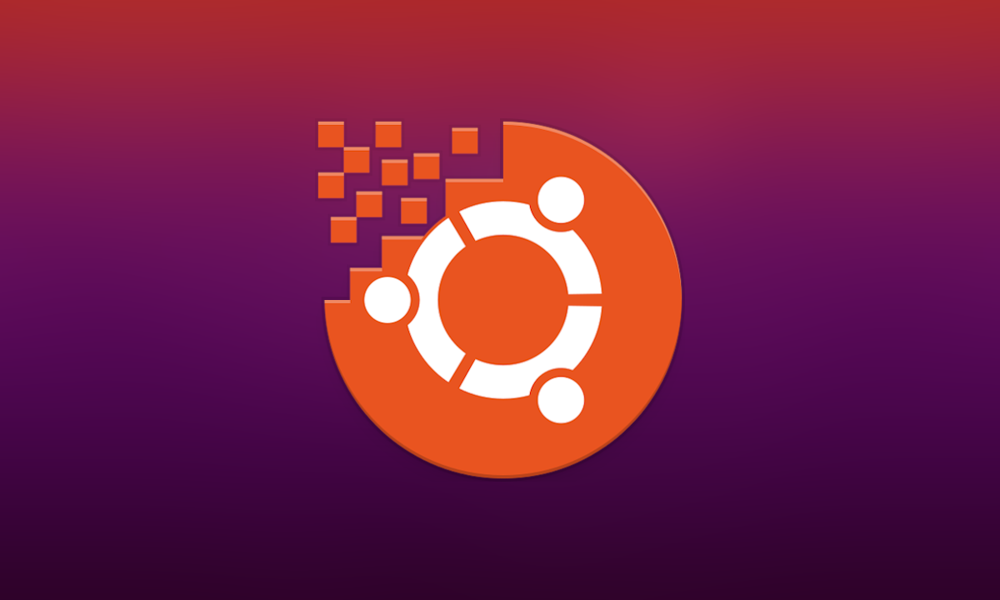

TAREAS PRIMER PERIODO
Instalar VMWare Workstation Pro
Qué el estudiante, realice los pasos necesarios para la instalación del software VMWare Workstation Pro, en la plataforma del sistema operativo Windows, para poder configurar máquinas virtuales que servirán como laboratorio de pruebas de Servidores Web.
Qué el estudiante, conozca los pasos necesarios para la instalación del sistema operativo Windows Server 2019, en una máquina virtual.
Instalación de Contenedor Docker en Windows 10
Funciones y Características de los Servidores
Qué el estudiante, pueda realizar los pasos necesarios para la instalación y configuración de Contenedores Docker en ambiente Windows para implementar aplicaciones web.
Qué el estudiante, mediante el uso adecuado de los recursos online disponibles en la web, pueda realizar una investigación que le permita conocer sobre las funcionalidades y características en general de los Servidores tanto en el sistema Windows, como en el sistema Linux.
Crear un Contenedor Docker en Windows 10 para sitio Web Estático
Instalación de Contenedor Docker en Ubuntu
Qué el estudiante, pueda realizar los pasos necesarios para la instalación y configuración de Contenedores Docker en ambiente Linux.
Qué el estudiante, pueda aplicar el aprendizaje sobre contenedores Docker para crear un contenedor de sitio web estático en Windows 10.

Configuración del contenedor de Servlets Apache Tomcat en Ubuntu
Configuración del contenedor de Servlets Apache Tomcat en Ubuntu
Qué el estudiante, pueda realizar los pasos necesarios para la configuración del Contenedor de Servlets Apache Tomcat en el ambiente de Windows Server.
Qué el estudiante, pueda realizar los pasos necesarios para la configuración del contenedor de Servlets Apache Tomcat en GUN/Linux Ubuntu 20.04 LTS.